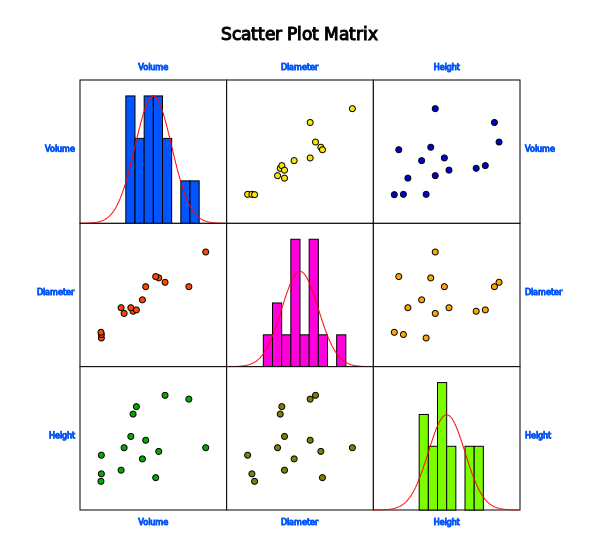
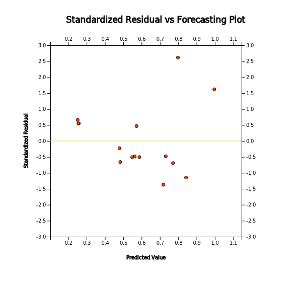
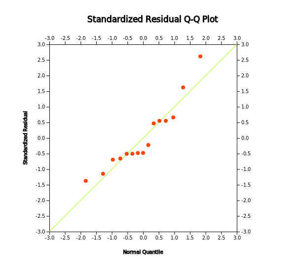

Chapter 12. Correlation and Regression Analysis
12.3 Multiple Linear Regression Analysis
[presentation] [video]
12.3.1 Multiple Linear Regression Model
| Diameter(\(cm\)) | Height(\(m\)) | Volume(\(m^3\)) |
|---|---|---|
| 21.0 | 21.33 | 0.291 |
| 21.8 | 19.81 | 0.291 |
| 22.3 | 19.20 | 0.288 |
| 26.6 | 21.94 | 0.464 |
| 27.1 | 24.68 | 0.532 |
| 27.4 | 25.29 | 0.557 |
| 27.9 | 20.11 | 0.441 |
| 27.9 | 22.86 | 0.515 |
| 29.7 | 21.03 | 0.603 |
| 32.7 | 22.55 | 0.628 |
| 32.7 | 25.90 | 0.956 |
| 33.7 | 26.21 | 0.775 |
| 34.7 | 21.64 | 0.727 |
| 35.0 | 19.50 | 0.704 |
| 40.6 | 21.94 | 1.084 |
Answer
Load the data saved at the following location of 『eStat』.
In the variable selection box which appears by selecting the regression icon, select 'Y variable' by volume and select ‘by X variable’ as the diameter and height to display a scatter plot matrix as shown in <Figure 12.3.1>. It can be observed that there is a high correlation between volume and diameter, and that volume and height, and diameter and height are also somewhat related.
|

<Figure 12.3.1> Scatterplot matrix
|

Since the volume is to be estimated using the diameter and height of the tree, the volume is the dependent variable \(\small Y\), and the diameter and height are independent variables \(\small X_1 , X_2\) respectively, and the following regression model can be considered.
\(\quad Y_i = \beta_0 + \beta_1 X_{i1} + \beta_2 X_{i2} + \epsilon_i , \quad i=1,2,...,15\)
|
Practice 12.3.1
A health scientist randomly selected 20 people to determine the effect of smoking and obesity on
their physical strength and examined the average daily smoking rate (\(x_1\), number/day),
the ratio of weight by height (\(x_2\), kg/m), and the time to continue to exercise with
a certain intensity (\(y\), in hours). Draw a scatter plot matrix of this data and consider
a regression model for this problem.
[Ex] ⇨ eBook ⇨ PR120301_SmokingObesityExercis.csv.
|
Here \(\mathbf {Y, X}, \boldsymbol{\beta , \epsilon}\) are defined as follows: $$ {\bf Y} = \left[ \matrix{ Y_1 \\ Y_2 \\ \cdot \\ \cdot \\ Y_n } \right], \quad {\bf X} = \left[ \matrix{ 1 & X_{11} & X_{12} & \cdots & X_{1k} \\ 1 & X_{21} & X_{22} & \cdots & X_{2k} \\ & & \cdots \\ & & \cdots \\ 1 & X_{n1} & X_{n2} & \cdots & X_{nk} } \right], \quad {\boldsymbol \beta} = \left[ \matrix{ \beta_0 \\ \beta_1 \\ \cdot \\ \cdot \\ \beta_k } \right], \quad {\boldsymbol \epsilon} = \left[ \matrix{ \epsilon_1 \\ \epsilon_2 \\ \cdot \\ \cdot \\ \epsilon_n } \right] $$
12.3.2 Estimation of Regression Coefficient
If the estimated regression coefficients are \({\bf b} = (b_0 , b_1 , ... , b_k )\), the estimate of the response variable \(Y\) is as follows: $$ {\hat Y}_i = Y_i - (b_0 + b_1 X_{i1} + \cdots + b_k X_{ik} ) $$ The residuals are as follows: $$ \begin{align} e_i &= Y_i - {\hat Y}_i \\ &= Y_i - (b_0 + b_1 X_{i1} + \cdots + b_k X_{ik} ) \end{align} $$ By using a vector notation, the residual vector \(\bf e\) can be defined as follows: $$ \bf {e = Y - X b} $$
12.3.3 Goodness of Fit for Regression and Analysis of Variance
In the multiple linear regression analysis, the standard error of residuals is defined as follows: $$ s = \sqrt { \frac{1}{n-k-1} \sum_{i=1}^{n} (Y_i - {\hat Y}_i )^2} $$ The difference from the simple linear regression is that the degrees of freedom for residuals is \(n-k-1\), because the \(k\) number of regression coefficients must be estimated in order to calculate residuals. As in simple linear regression, \(s^2\) is a statistic such as the residual mean squares (\(MSE\)). The coefficient of determination is given in \(R^2 = \frac{SSR}{SST}\) and its interpretation is as shown in the simple linear regression.
The sum of squares is defined by the same formula as in the simple linear regression, and can be divided with corresponding degrees of freedom as follows and the table of the analysis of variance is shown in Table 12.3.2.
\(\quad\) Sum of squares \(\quad \quad \;\;SST = SSE + SSR\)
\(\quad\) Degrees of freedom \(\quad (n-1) = (n-k-1) + k\)
| Source | Sum of squares | Degrees of freedom | Mean Squares | F value |
|---|---|---|---|---|
| Regression | SSR | \(k\) | MSR = \(\frac{SSR}{k}\) | \(F_0 = \frac{MSR}{MSE}\) |
| Error | SSE | \(n-k-1\) | MSE = \(\frac{SSE}{n-k-1}\) | |
| Total | SST | \(n-1\) |
12.3.4 Inference for Multiple Linear Regression
Point estimate: \(\quad b_i \)
Standard error of estimate \(b\): \(\quad SE(b_i) = \sqrt c_{ii} \cdot s \)
Confidence interval of \(\; \beta_i\): \(\quad b_i \pm t_{n-k-1; α/2} \cdot SE(b_i)\)
Testing hypothesis:
\(\quad\) Null hypothesis: \(\quad H_0 : \beta_i = \beta_{i0}\)
\(\quad\) Test statistic: \(\quad t = \frac{b_i - \beta_{i0} } { SE (b_i) }\)
\(\quad\) rejection region:
\(\qquad\) if \(\; H_1 : \beta_i \lt \beta_{i0}\), then \(\; t < - t_{n-k-1; α}\)
\(\qquad\) if \(\; H_1 : \beta_i \gt \beta_{i0}\), then \(\; t > t_{n-k-1; α}\)
\(\qquad\) if \(\; H_1 : \beta_i \ne \beta_{i0}\), then \(\; |t| > t_{n-k-1; α/2}\)
(Since 『eStat』 calculates the \(p\)-value under the null hypothesis \(H_0 : \beta_i = \beta_{i0}\),
\(p\)-value is used for testing hypothesis. )
Answer
In the options window below the scatter plot matrix in <Figure 12.3.1>, click [Regression Analysis] button. Then you can find the estimated regression line, ANOVA table as shown in <Figure 12.3.3> in the Log Area. The estimated regression equation is as follows:
\(\quad \small {\hat Y}_i = -1.024 + 0.037 X_1 + 0.024 X_2 \)
In the above equation, 0.037 represents the increase of the volume of the tree when the diameter (\(\small X_1\)) increases 1(cm).
The \(p\)-value calculated from the ANOVA table in <Figure 12.3.3> at \(\small F\) value of 73.12 is less than 0.0001, so you can reject the null hypothesis \(\small H_0 : \beta_1 = \beta_{2} = 0\) at the significance level \(\alpha\) = 0.05. The coefficient of determination, \(\small R^2\) = 0.924, implies that 92.4% of the total variances of the dependent variable are explained by the regression line. Based on the above two results, we can conclude that the diameter and height of the tree are quite useful in estimating the volume.

Since \(\small {SE}(b_1 ) = 0.003, \; {SE} (b_2 ) = 0.008 \) and \(t_{12; 0.025}\) = 2.179 from the result in <Figure 12.3.3>, the 95% confidence intervals for each regression coefficients can be calculated as follows: The difference between this result and the <Figure 12.3.3> due to the error in the calculation below the decimal point.
\(\quad \) 95% confidence interval for \(\beta_1 : \;\; \) 0.037 \(\pm\) (2.179)(0.003) \(\Rightarrow\) (0.029, ~0.045)
\(\quad \) 95% confidence interval for \(\beta_2 : \;\; \) 0.024 \(\pm\) (2.179)(0.008) \(\Rightarrow\) (0.006,~ 0.042)
In the hypothesis test of \(\small H_0 : \beta_i = 0 , \;\; H_1 : \beta_i \ne 0\) , each \(p\)-value is less than the significance level of 0.05, so you can reject each null hypothesis.
The scatter plot of the standardized residuals is shown in <Figure 12.3.4> and the Q-Q scatter plot is shown in <Figure 12.3.5>. There is no particular pattern in the scatter plot of the standardized residuals, but there is one outlier value, and the Q-Q scatter plot shows that the assumption of normality is somewhat satisfactory.

